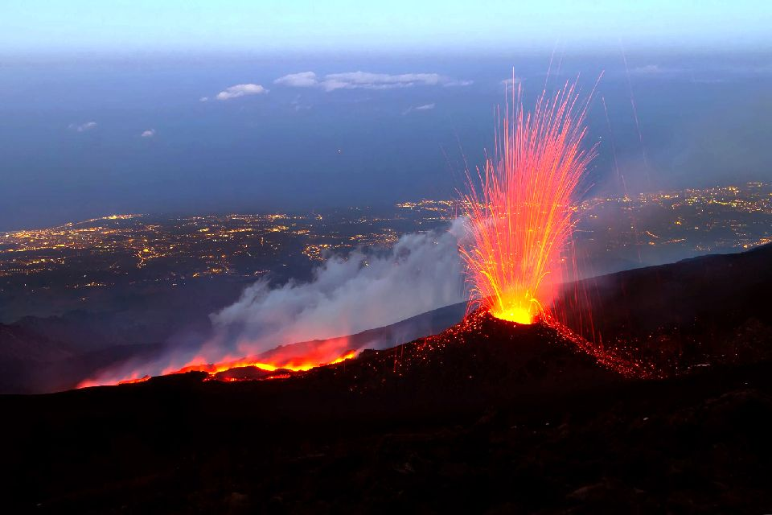
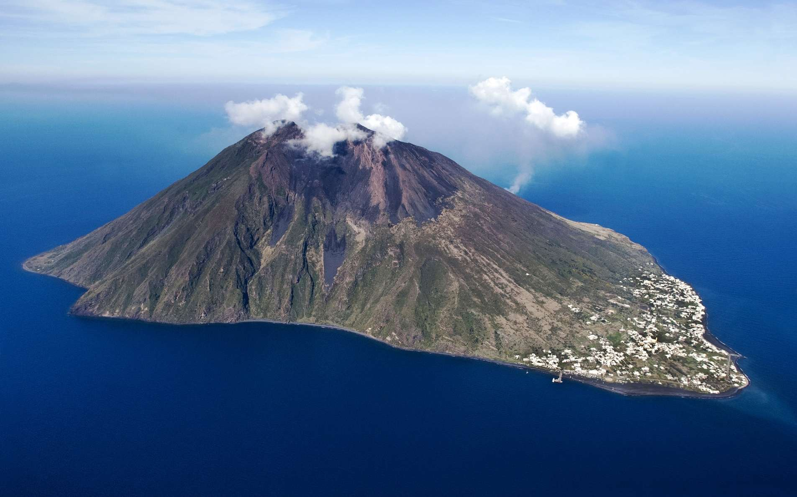
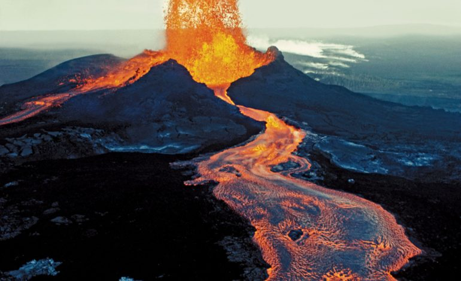

Types de volcans
Les volcans explosifs :
Les volcans explosifs sont connus pour leur spectaculaires explosions mais de faible ampleur. Lors de l'explosion, tous les déchets présents dans le volcans ainsi que de la lave fragmenté vont jaillir d'un seul coup du cratère.En Italie et plus particulièrement en Sicile, il y a de nombreux volcans explosifs comme le Vulcano, le Stromboli, le Vésuve, l'Etna.
- Etna
- Strombolie
- Vidéo éruption explosive


Eruption explosive
Les volcans effusifs :
Les volcans effusifs ont une éruption différente des volcans explosifs. Leurs éruptions effusives, aussi appelées « éruptions de type hawaïen » sont caractérisées par une coulée de lave le long de la pente rocheuse à une température d'environ 1200°C.Il y en a un peu partout comme en France avec le Puy de Dôme (actuellement éteint) ou ailleurs avec Le Kilauea à Hawaii ou Le Piton de la Fournaise en Réunion.
- Le Puy de Dôme
- Kalauena
- Vidéo éruption effusive


Eruption effusive